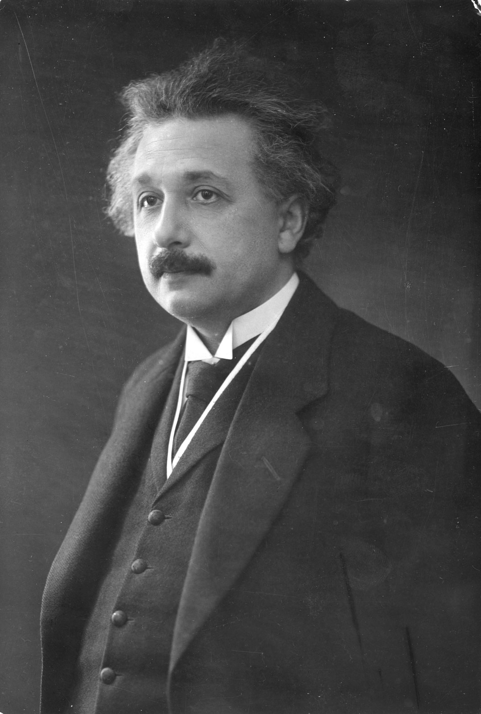

ALBERT EINSTINE

American theoretical physicist, known for the formulation of the relativity theory, b.
Ulm, Germany.
He is recognized as one of the greatest physicists of all time.
LIFE OF ALBERT
Einstein lived as a boy in Munich and Milan, continued his studies at the cantonal school at Aarau, Switzerland,
and was graduated (1900) from the Federal Institute of Technology, Zürich. Later he became a Swiss citizen. He was examiner (1902–9)
at the patent office, Bern. During this period he obtained his doctorate (1905) at the Univ. of Zürich, evolved the special theory of relativity,
explained the photoelectric effect, and studied the motion of atoms, on which he based his explanation of Brownian movement. In 1909 his work had already
attracted attention among scientists, and he was offered an adjunct professorship at the Univ. of Zürich. He resigned that position in 1910 to become full
professor at the German Univ., Prague, and in 1912 he accepted the chair of theoretical physics at the Federal Institute of Technology, Zürich.
By 1913 Einstein had won international fame and was invited by the Prussian Academy of Sciences to come to Berlin as titular professor of physics and as director
of theoretical physics at the Kaiser Wilhelm Institute. He assumed these posts in 1914 and subsequently resumed his German citizenship. For his work in theoretical
physics, notably on the photoelectric effect, he received the 1921 Nobel Prize in Physics. His property was confiscated (1934) by the Nazi government because he
was Jewish, and he was deprived of his German citizenship. He had previously accepted (1933) a post at the Institute for Advanced Study, Princeton, which he held
until his death in 1955. An ardent pacifist, Einstein was long active in the cause of world peace; however, in 1939, at the request of a group of scientists, he
wrote to President Franklin Delano Roosevelt to stress the urgency of investigating the possible use of atomic energy in bombs.
In 1940 he became an American citizen.
ADDITIONAL INFO